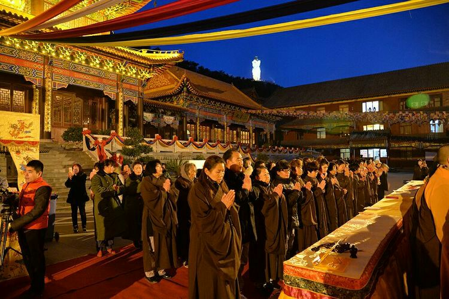

2月
19
“嗵！嗵！嗵！”——只听得燕山脚下，三声炮响。紧接着，“咣”的一锣，花花绿绿的人群像潮水一样兴奋地奔涌而来。仿佛眨眼间，小镇西侧的广场上，已经聚集数万人。 如果我告诉你，这是一场自发的民间活动，你一定十分意外。如果再告诉你，这只是一个庙会，你一定会更加惊讶。这一日，来自北京、天津、承德和东北三省的客人源源不断地汇聚这儿——唐山市迁西县新集镇。在农村，几乎每个村庄都有庙会啊，人们为什么要长途跋涉，舍近求远呢？是什么样的神奇力量，才能造就这样的场面呢？ 燕子来时新社，梨花落后清明。春天是庙会的季节，村村社火，家家待客，这是每一个村庄的习俗。小时候，除了过年之外，庙会是最令人憧憬的日子。每到这一天，便穿上新衣，在人群中鱼儿一样钻来钻去，寻找乐趣。
登临凤凰山，一生保平安
凤凰山庙会由来已久，知名度广泛。就其规模而言，凤凰山庙会在京津唐承地区乃至中国北方堪为首屈一指，历来被人们誉为“京东第一庙会”。民国初年，由于社会相对稳定，凤凰山庙会一度达到兴盛时期，声名远扬东三省、华中、华东、华南等地。后来由于军阀混战和日寇入侵，庙会也随之衰落，陷入时断时续的状态。建国初期，政府对凤凰山庙会加以重视，将凤凰山紫竹院列为县级文物保护单位，并拨款对其加以修缮，这对以后凤凰山庙会的重兴起到了一定的作用。1957年和1958年，庙会规模较大，1959年，为防止迷信活动，政府有关部门强令禁止庙会活动，1963年是“文革”前的最后一次庙会，规模空前，这年，迁西河北梆子剧团到会演出，给人们留下了深刻的印象。1964年“四清” 运动开始，从此停办。1966的年文化大革命运动中。庙宇被拆毁，佛像被推翻，老道李彬被赶下山。 20世纪80年代初期，国家不断落实宗教政策，1984年凤凰山庙会逐渐得以恢复。
凤凰山历来以神明灵验著称的，据老人们讲，几乎有求必应，民间还流传着许多关于白衣菩萨显灵的故事。即使在庙宇被拆毁以后的30年来，人们并没有间断过到凤凰山祭祀神灵，人们认为，庙宇虽然没了，但神灵还在，她依然像过去一样保佑着这方土地和这方百姓的平安。这大概也是新集庙会非常红火香客众多的原因吧？看到由山脚一直到山顶绵延数里竟然有几百上千个售香的摊位，而且各个摊主信心十足准备了那么多货源实在令我们惊诧不已。接下去我吃惊的发现，各个售香的摊点上小包的香很少，更多的是长的大的香，一般都有一米多长，粗细不同价格不等，从十几元到几十元都有。有的香居然有碗口粗，当然价钱也不菲，每根300元。看来消费升级在这里也有体现，香客们竟相攀比，都要多烧香烧高香争先恐后要得到佛祖的宠爱。
农历二月十九是观音菩萨圣诞日，为庆贺菩萨的诞生，唐山，开平，迁西，迁安等地的花会爱好者，自发来新集凤凰山进行花会表演。
有文会（踩高跷，大秧歌，抬杆，举杆，人灯会，跑旱船），武会，灯番，舞龙狮等花会形式，不同扮相演绎不同的节目，有小拜年，
傻柱子接媳妇，捉蝴蝶，八仙过海，铁弓缘，济公活佛，现代舞等，内容丰富多彩，高峪花会为庙会第一会，引领100多道花会向凤凰山前进，
一直到凤凰山戏台下，唱了一夜的戏到此结束，迎接花会的到来。各花会在戏台前表演结束后卸妆，向凤凰山进香，拜菩萨，请大戏，看花会被百姓一代代传承下来